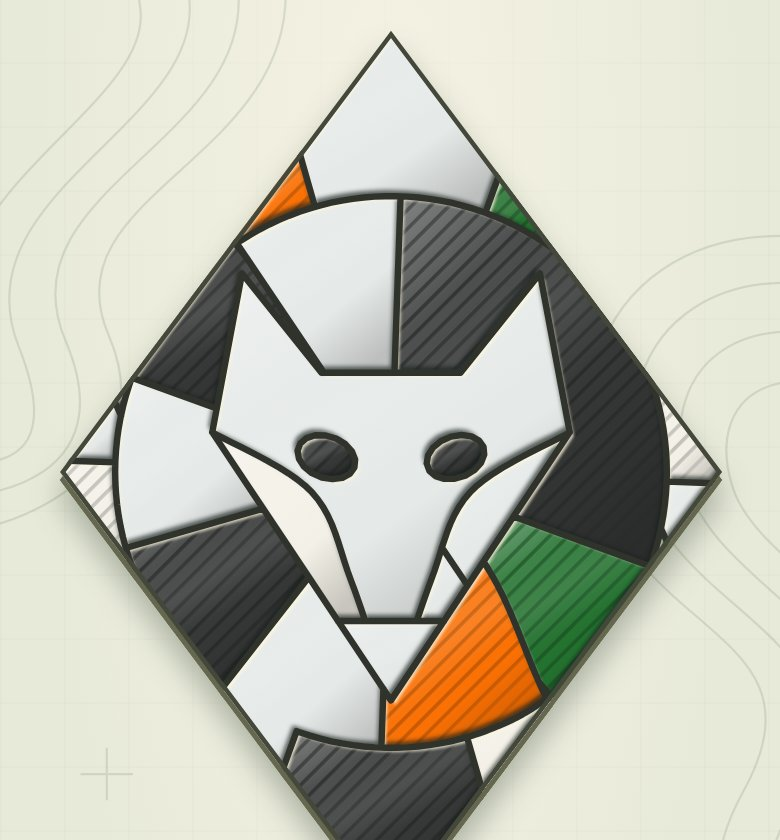
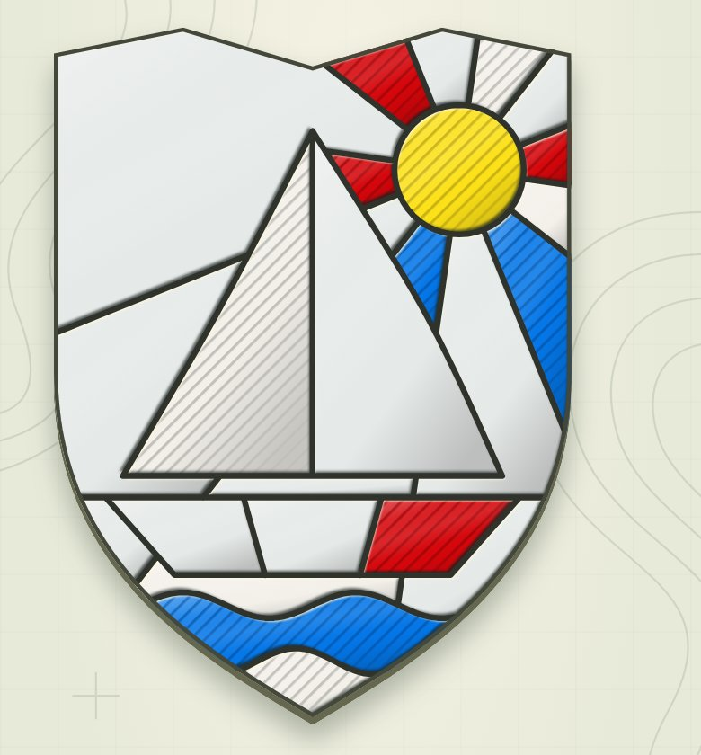
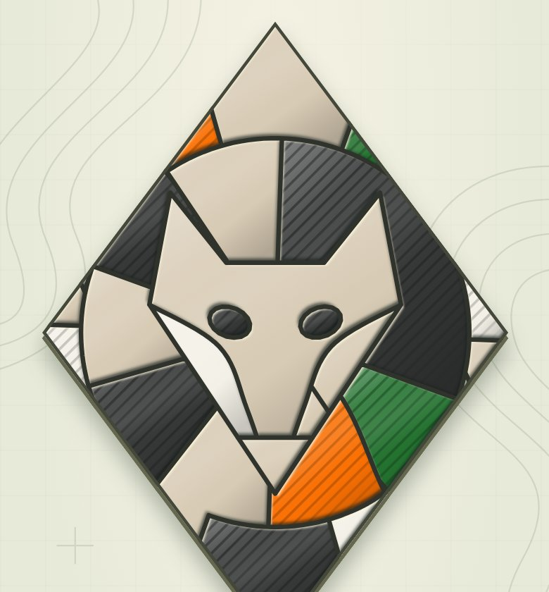
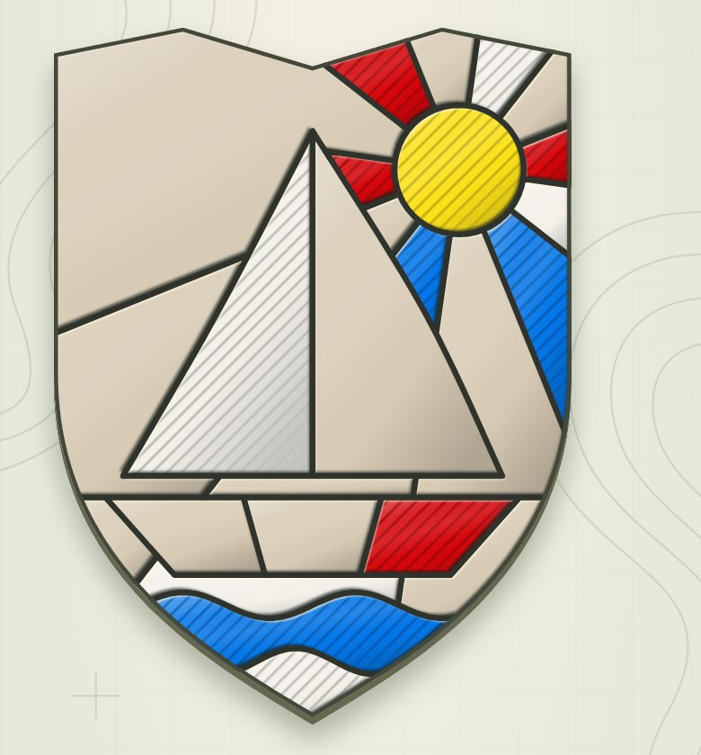
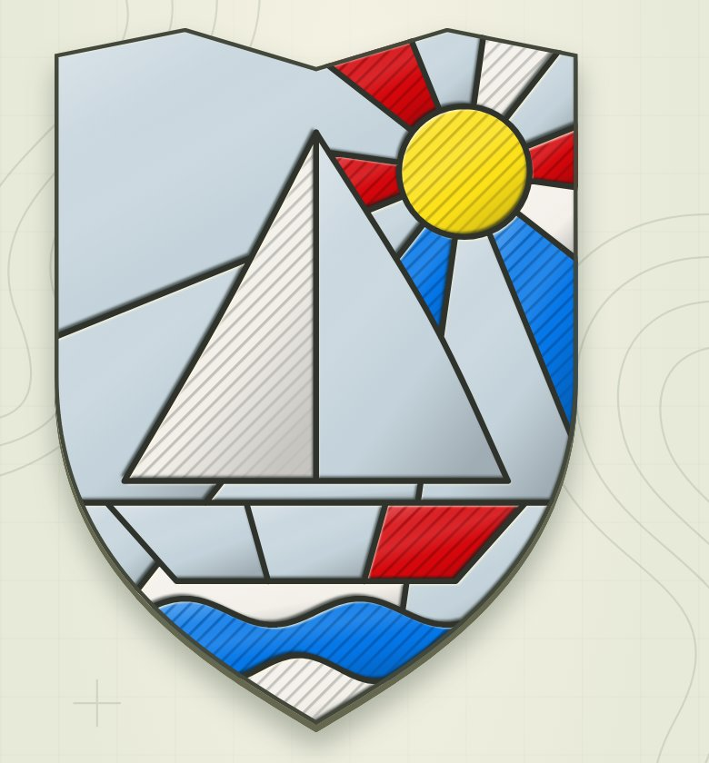
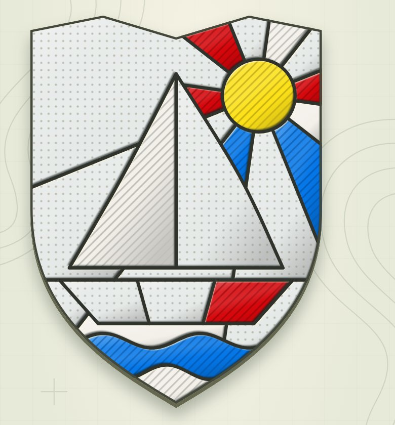
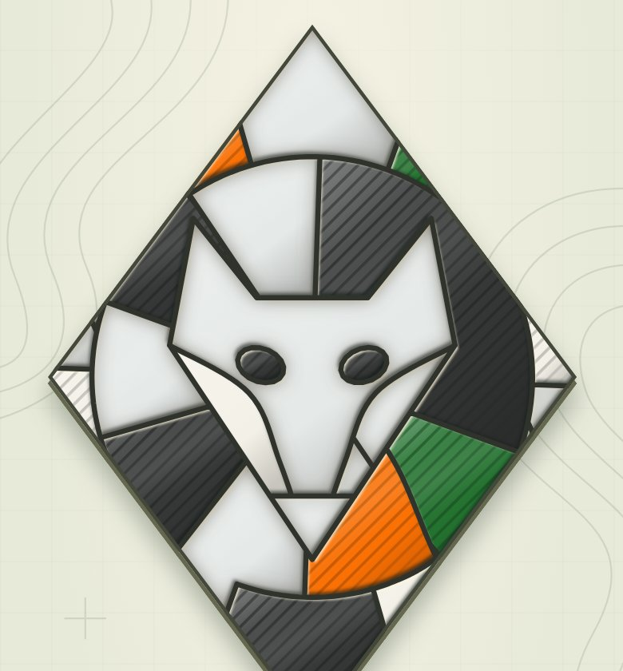
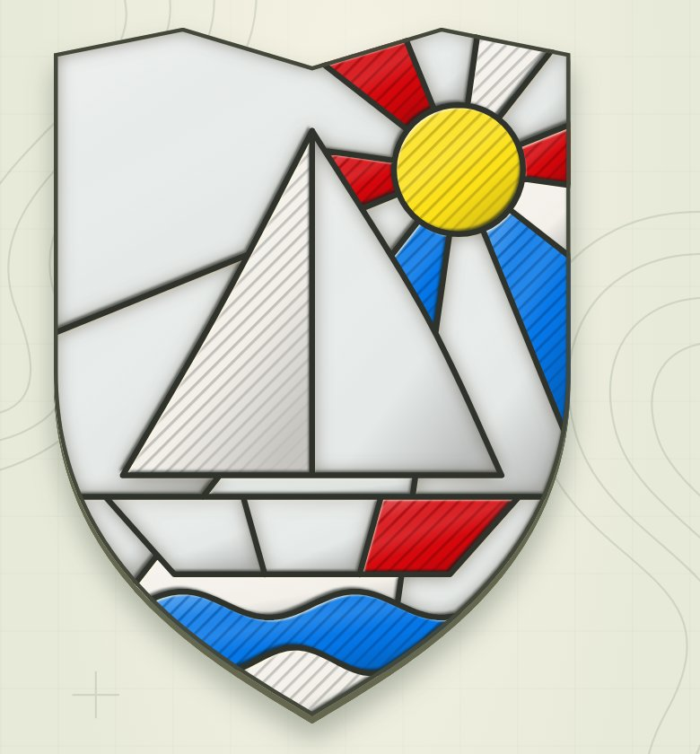

Beyaz üstüne beyaz · boş alan seçenekleri
Tilki ve Yelkenli. Her ikisinde de beyaz parçaların yarısı boyandı, kalanı boş. A ve B yalnızca beyaz camı olan 7 bölümde devreye girer; C ve D her bölümde aynı görünür.
Şu anki
Boş alanlar açık kağıt rengi. Boyanmış beyaz ile boş alan neredeyse aynı.


A · Kum
Beyazlı bölümlerde boş alanlar sıcak kum rengi. Sade ve vitraya uygun; beyaz boyanınca hemen ayrılıyor.


B · Buz mavisi
Beyazlı bölümlerde boş alanlar soğuk açık mavi. Beyazla ayrım net, biraz daha soğuk duruyor.

C · Noktalı kağıt
Renk aynı kalır, boş alanlarda ince nokta dokusu olur; boyanınca kaybolur. Bütün bölümlerde aynı görünüm.

D · Gömük cam
Renk aynı kalır, boş alanların kenarında içe doğru yumuşak gölge olur; boyanınca kaybolur.

